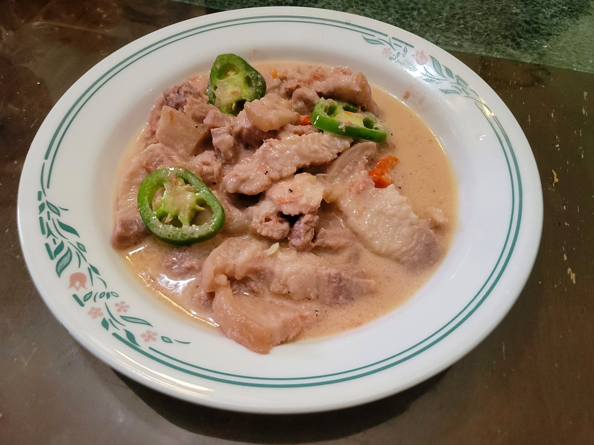

Bicol Express

Ingredients:
- 2 lb Pork belly, cubed into 1" cubes or sliced into strips
- 1 Onion, diced
- 2 inches Ginger, minced
- 4 cloves Garlic, minced
- 6 Bird's eye chilies, chopped finely
- 2 cups Coconut milk
- 2 cups Coconut cream, divided
- 1/4 - 1/2 cup Bagoong alamang, or as needed
- 1 cup Water
- Black pepper, to taste
- 1 Serrano, sliced
Instructions:
- Place the pork belly, onion, ginger, garlic, chilies, and coconut milk into a wok. Cover and bring to a boil. Then remove the cover.
- Stir in 1/4 cup of bagoong, 1 cup of coconut cream, and the water. Bring back to a boil and then reduce the heat to low. Let cook for 50 minutes or more, or until the pork becomes tender and the sauce has reduced to about 1/4. Stir occasionally, more so when the sauce is more reduced.
- Stir in the rest of the coconut cream. Taste and add up to 1/4 cup bagoong to taste. Season with black pepper to taste. Then add in the serrano and let cook for 5-10 more minute or until thickened.
- Serve hot over white rice.